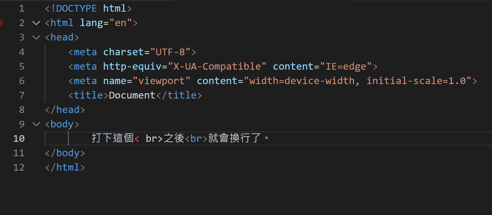
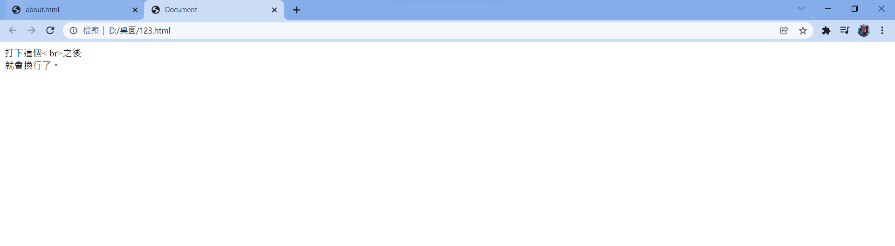
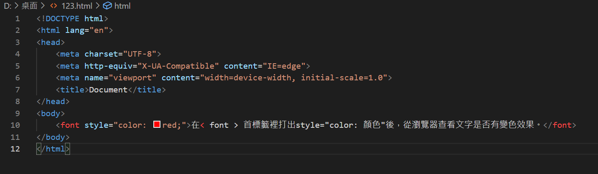
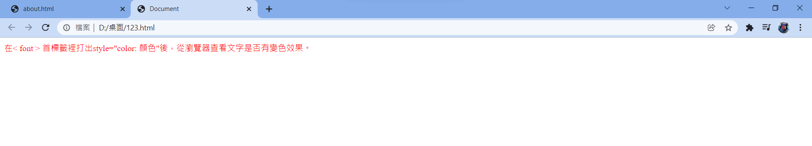
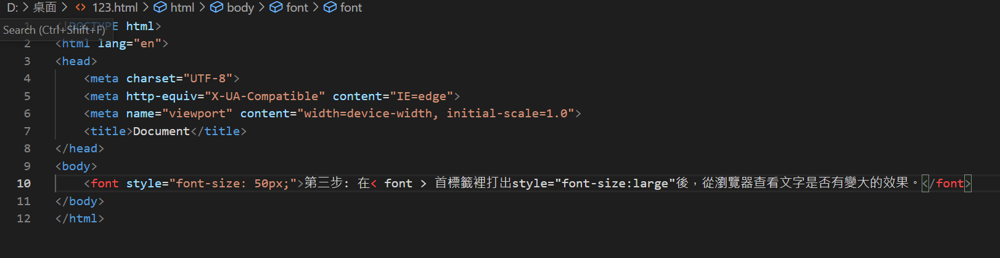
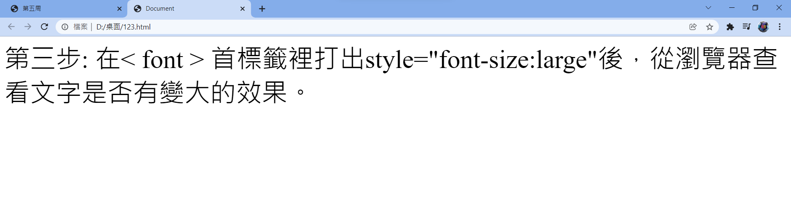

第五周:用編譯器打出文字並在內網上顯示該文字的換行、更改字體大小、顏色效果
第一步:在要打的文字內容後面打出< br >後，從瀏覽器查看文字是否有換行效果。
 
第二步: 在< font > 首標籤裡打出style="color: 顏色"後，從瀏覽器查看文字是否有變色效果。
 
第三步: 在< font > 首標籤裡打出style="font-size:large"後，從瀏覽器查看文字是否有變大的效果。
 
收穫:
透過這周的學習讓我了解到文字變化的語法型式。
上一周
回首頁
下一周